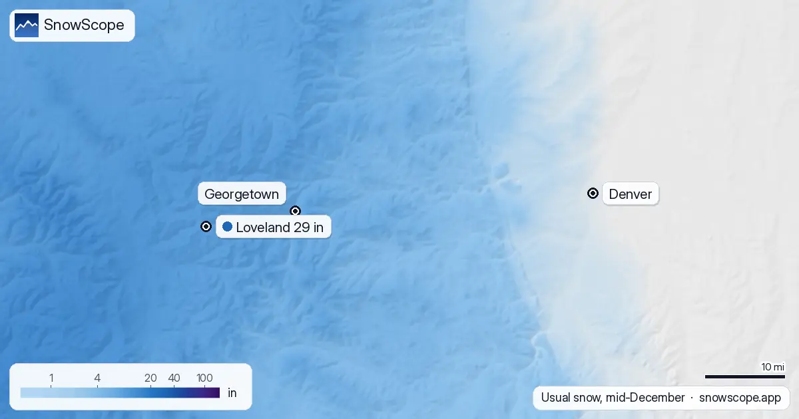

El salto de precio de diciembre en Loveland: 60 $ antes del 14 de diciembre, 159 $ después
El salto de precio de Loveland el 14 de diciembre es brusco: 60 € online se convierte en 159 € en taquilla. El problema es que la nieve de principios de diciembre es real pero no muy espesa, y estás pagando por altitud y esperanza más que por una montaña completa. Los números muestran qué esquiadores deberían aprovechar la oferta y cuáles deberían esperar.
Consulta la previsión de nieve en tiempo real de Loveland Basin Ski Area en la app SnowScopeEspesor de nieve, alertas de nieve polvo y mapa 3D, gratis.
Qué consigues por 60 €: una apuesta a media montaña
En un 1 de diciembre típico en la media montaña de Loveland (3 592 m), tienes 20 cm de nieve. Dos semanas después, el 15 de diciembre, eso crece hasta 29 cm. La diferencia importa: principios de diciembre es esquiable, pero mediados de diciembre es más seguro para un día completo.
La mitad de todos los inviernos ven 20 cm o más el 1 de diciembre a esa altitud. Para mediados de diciembre las probabilidades suben al 67 %, así que la segunda mitad del mes es una apuesta más sólida. La entrada de 60 € te mete en una ventana más fina e incierta.

La altitud es la ventaja de Loveland en temporada temprana
Los remontes de Loveland van desde 3 318 m hasta 3 866 m, lo que lo convierte en una de las estaciones de esquí más altas de Colorado. Esa altitud significa que la nieve de temporada temprana dura más aquí que en estaciones más bajas. La nieve de media montaña normalmente se asienta a finales de septiembre; la base en 3 318 m se queda sin nieve hasta más tarde.
El 1 de diciembre, la base típicamente tiene 16 cm, mientras que la cima tiene 20 cm. Este desnivel vertical es tu aliado en principios de diciembre: esquía por encima de la altitud de la base, mantente en pistas preparadas, y tienes suficiente para trabajar.

¿Cuánto más fina es principios de diciembre que mediados de invierno?
El 25 de diciembre, la media montaña suele alcanzar 36 cm. El 31 de diciembre, 39 cm. Eso es 50 % más profundo que principios de diciembre. Marzo, el mes más nevado de Loveland, promedia 54 cm en media montaña.
La tendencia a largo plazo muestra que principios de diciembre se ha vuelto más fina. En los inviernos de 1980-81 a 1994-95, el promedio del 15 de diciembre en media montaña era 32 cm. En los últimos 15 inviernos, ha sido 23 cm. El invierno pasado solo tuvo 19 cm en esa fecha.
El Forfait de 4 Días cambia las matemáticas a partir del 14 de diciembre
Una vez que comienza la temporada regular el 14 de diciembre, el precio de ventana sube a 159 €. En ese punto, el Forfait de 4 Días de Loveland—cuatro entradas de remonte por 299 €—se convierte en la compra más inteligente. Eso es 75 € por entrada, cortando el coste por día a la mitad.
Si planeas dos o más visitas en mediados a finales de diciembre, salta la oferta temprana de 60 € y espera al Forfait de 4 Días. La nieve será más espesa, la montaña más abierta, y tu coste por entrada será menor.
Cómo se compara: Loveland, Ski Cooper, Wolf Creek
Ski Cooper, cerca de Leadville, mantiene entradas de entre semana a 49 € y fin de semana a 99 €. En un 15 de diciembre típico, la media montaña tiene 26 cm—no mucho menos que los 29 cm de Loveland. Wolf Creek, la más nevada de las tres, tiene 34 cm en esa fecha pero cobra 96–110 €.
La entrada online de 60 € de Loveland supera el precio de fin de semana de Cooper y la tarifa diaria de Wolf Creek, aunque la nieve es más fina. Pero si esquías entre semana, Cooper a 49 € es más barato y tiene nieve de diciembre casi igual. El acantilado de precio de 60 € a 159 € el 14 de diciembre es la verdadera ventaja de Loveland: compra antes de esa fecha.
Quién debería usar la entrada de 60 €
Aprovecha la oferta de temporada temprana si esquías terreno preparado, toleras bases de 20–25 cm, y vives cerca de Denver. Cómpralo online con anticipación. Evita el precio de ventana de 119 €—no tiene sentido.
Sáltalo si quieres toda la montaña abierta, necesitas nieve fuera de pista, o puedes esquiar en mediados de diciembre. Después del 14 de diciembre, compra un Forfait de 4 Días o usa un Pase Indy (Loveland es miembro; Indy Base cuesta 419 €, Indy+ cuesta 469 € por dos días en cada una de más de 300 estaciones).
Consejos para esquiadores
- Compra la entrada de 60 € online solo, no en taquilla. La compra anticipada es toda la ganga.
- Esquía por encima de 3 500 m en principios de diciembre; la base es fina y puede exponer rocas bajo cobertura ligera.
- Lleva protección contra el viento: la media montaña está a 3 592 m y el viento de diciembre es feroz a esa altitud.
- A partir del 14 de diciembre, el Forfait de 4 Días a 299 € tiene mejor valor que la entrada de taquilla de 159 €. Planifica tus visitas antes de esa fecha.
- Consulta el Departamento de Transporte de Colorado (CDOT) para cierres de la I-70 y el Túnel de Eisenhower; las carreras de temporada temprana significan riesgo meteorológico.
Sobre estas cifras
Los espesores de nieve de las estaciones son la nieve más profunda en las pistas altas en la fecha indicada; son estimaciones para una zona, no una medida en un punto. Las previsiones pueden cambiar. Consulta siempre el boletín oficial de aludes antes de salir fuera de pista.
Boletines oficiales de aludes: Colorado Avalanche Information Center
Citar este informe
Para investigación, docencia o prensa: cifras y gráficos reutilizables libremente bajo CC BY 4.0 con esta cita.
SnowScope (2026), El salto de precio de diciembre en Loveland: 60 $ antes del 14 de diciembre, 159 $ después, https://snowscope.app/blog/es/2026/11/loveland-ski-area-december-deal-2026.html, consultado el 2026-11-14
SnowScope (Atlas Labs). (2026, November 14). El salto de precio de diciembre en Loveland: 60 $ antes del 14 de diciembre, 159 $ después. SnowScope snow reports. https://snowscope.app/blog/es/2026/11/loveland-ski-area-december-deal-2026.html
BibTeX
@misc{snowscope2026lovelandskiareadecemberd,
author = {{SnowScope (Atlas Labs)}},
title = {El salto de precio de diciembre en Loveland: 60 $ antes del 14 de diciembre, 159 $ después},
year = {2026},
month = nov,
howpublished = {\url{https://snowscope.app/blog/es/2026/11/loveland-ski-area-december-deal-2026.html}},
note = {Published 2026-11-14 17:47 UTC; accessed 2026-11-14}
}· CC BY 4.0 · Métodos, datos y herramientas →
Sigue Loveland Basin Ski Area
Gratis: un aviso cuando llega la nieve y la previsión cada mañana.